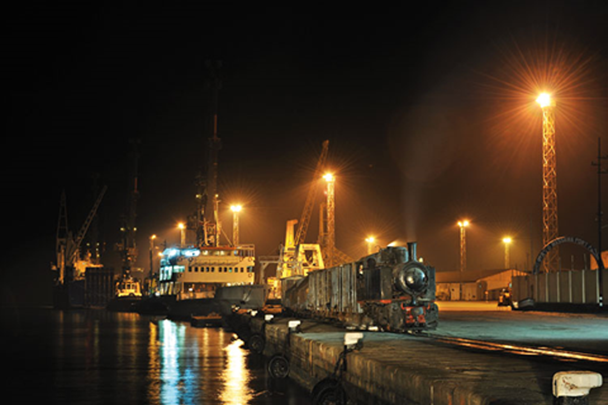
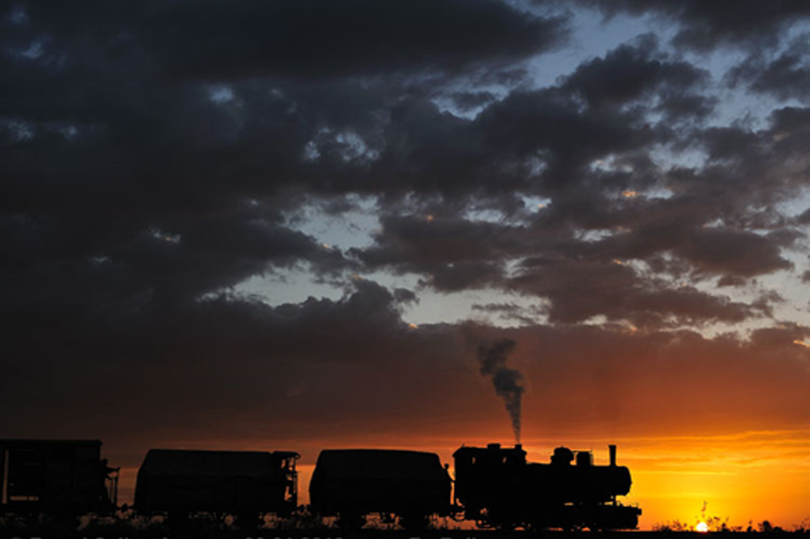
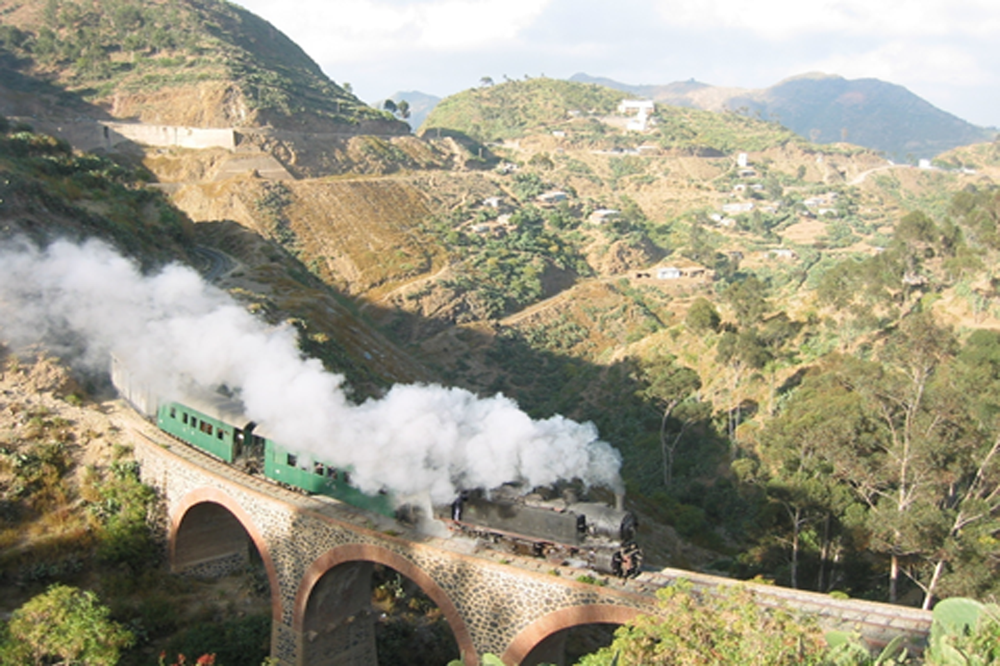

Eritrean Scientific Society
"Let your HOPES, Not your HURTS, Define your FUTURE"
Eritrean Scientific Society
"Let your HOPES, Not your HURTS, Define your FUTURE"
Eritrean Institute of Technology (EIT) is located in a place called Mai Nefhi 20km
to the south west of Asmara. EIT has three biggest Colleges inside the compound
College of Education, College of Engineering and College of Science.
Read more...
Hamelmalo College of Agriculture (HAC) is located 12km
to the north of Keren. HAC has departments that helps in the agricultural growth of the
country
Read
more...
College of Business & Social Science is located in a place called Adi Keyh 110km
to the south of Asmara. CASS has two big Colleges inside the compound.
Read more...
Asmara College of Health Science (ACHS) is located in Asmara. ACHS has three branches.
Read more...
Who wouldn't miss the buses, especially the rush hours
One of the world's important port with it's beauty
it's like the stars, it coruscates in the nights
This is the time everyone wants to to feel the air and take a memorable picture
The landscape has its own beauty
This webpage is an acdemic and scientific page,
aiming to help students in all High School and College Students as well as Graduates. The dream and work effort of this webpage is to motivate and help young Eritreans to
follow their passion and become great through sharing.
Because We believe the greatest wealth of knowledge is acquired through
unity, discussion and sharing. No matter what, It's our growth that will make our society and our nation
the strongest and better one. copyright © 2020
For any information please Contact us on